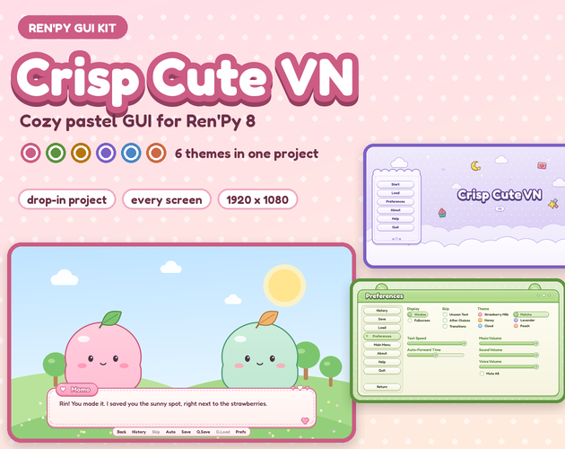

Crisp Cute VN: cozy pastel GUI kit for Ren'Py with 6 switchable themes
Crisp Cute VN is a soft, chunky, pastel GUI for Ren'Py 8, made for cozy, slice-of-life, romance and cute visual novels. It is a complete Ren'Py project: open it in the launcher and every screen is already styled, in 6 colour themes (Strawberry Milk, Matcha, Honey, Lavender, Cloud, Peach) that players can switch in Preferences.

- Contents
- A complete Ren'Py 8 project: every screen restyled in 6 switchable themes (81 images per theme), Fredoka font, demo script
- Formats
- Ren'Py 8 project (gui.rpy, screens.rpy, theme script), PNG images drawn for 1920 x 1080, Fredoka font (OFL)
- Price
- $6.99 on itch.io (anipixels.itch.io/crisp-cute-vn)
- Free sampler
- 17 images, free on itch.io (anipixels.itch.io/crisp-cute-vn-free)
- Licence
- Royalty-free for commercial and non-commercial projects, no credit required, no reselling or redistribution of the files
- Made by
- Anipixels, with procedural code written with an AI assistant (Claude)
What is included
- Dialogue: textbox with stitched edges, heart name tag, bouncing heart click-to-continue, narration, text input.
- Choices: idle, hover and locked (insensitive) choice buttons.
- Quick menu in a little paper tray: Back, History, Skip, Auto, Save, Q.Save, Q.Load, Prefs.
- Main menu: a pastel sky background with clouds, a scalloped button card and a big sticker-style title.
- Game menu: a window with round ears and a stitched header, used by Save, Load, Preferences, History, About and Help.
- Save / Load: 6 slots per page with thumbnail wells, hover badges and page buttons.
- Preferences: heart radio buttons, check boxes, sliders with a filled track and heart knob, and a theme picker.
- Also: confirm box with round ears, notify pop-up, skip indicator, NVL diary page, scroll bars, bars, speech bubbles and thought bubbles (for Ren'Py's bubble feature), a cursor per theme and a window icon.
- 6 themes: Strawberry Milk, Matcha, Honey, Lavender, Cloud and Peach. Players switch theme in Preferences and the choice is remembered.
- Demo script: a short cozy picnic scene with placeholder characters that reaches every screen.
Details
- Drop-in: it is the default Ren'Py template with the art and settings filled in, so the screens work like stock Ren'Py and the Ren'Py documentation applies.
- One line picks the starting theme; one more hides the picker and locks your game to it (you can then delete the other theme folders).
- Text is real Ren'Py text in the free Fredoka font. Nothing is baked into the images, so every language and every button label works.
- Drawn for 1920 x 1080 (the Ren'Py default). Ren'Py scales it to any window, including 1280 x 720 and fullscreen. There is no separate 1280 x 720 layout.
- Tested in Ren'Py 8.5.3: lint passes with no errors, and every screen was rendered in all six themes (the screenshots are those renders).
- Download size: CrispCuteVN_Full.zip is 2.77 MB.
Formats and engines
- A complete Ren'Py 8 project: the default Ren'Py template with the art and settings filled in (gui.rpy, screens.rpy, crispcute_themes.rpy, options.rpy and a demo script.rpy).
- 486 PNG images: 81 per theme in 6 theme folders, drawn for 1920 x 1080.
- The free Fredoka font (SIL Open Font License 1.1), included unchanged with its licence.
- README.txt with a quick start, how to copy the kit into an existing project, how to lock a game to one theme, and notes on resolution.
Works with: Ren'Py 8 (tested in 8.5.3). The images are plain PNGs, but the screens and theme switching are Ren'Py code, so this kit is made for Ren'Py only.
Free sampler
The free sampler has 17 images from the Strawberry Milk theme at 1920 x 1080 scale, with set-up notes: the dialogue textbox, heart name tag, click-to-continue heart, choice buttons (idle, hover, locked), quick menu tray, confirm box, notify and skip pop-ups and the cursor.
There is no browser demo for this pack: it is a Ren'Py project. The screenshots on this page are real Ren'Py renders of it.
Licence
Use the graphics and the project in any number of commercial or non-commercial games and visual novels (including game jams). Edit, recolour, resize or otherwise modify everything, and ship the images inside your finished game. Credit is appreciated but never required. You may not resell, redistribute or give away the kit itself, on its own or as part of another asset pack, GUI kit or template, modified or not, and you may not claim the graphics as your own original work in an asset pack. The bundled Fredoka font keeps its own open licence (OFL).
This is a summary of the LICENSE.txt inside the download. The sampler's copy of that file: crisp-cute-vn.txt.
Questions
Which version of Ren'Py does it need?
Ren'Py 8. It was tested in Ren'Py 8.5.3, where lint passes with no errors.
Can I add it to a game I have already started?
Yes. Copy gui/, fonts/, gui.rpy, screens.rpy and crispcute_themes.rpy into your game folder (back up yours first). If your project is not 1920 x 1080, use the kit's gui.rpy and 1920 x 1080 backgrounds; the README explains how.
Can players change the theme?
Yes. Preferences has a theme picker and the choice is remembered. One line sets the starting theme, and one more hides the picker and locks the game to it.
Does it work with other languages?
Yes. All text is real Ren'Py text in the Fredoka font; nothing is baked into the images.
How is it different from Crisp Cute?
Crisp Cute is a UI kit for cozy games in Godot and other engines: loose pieces and icons. Crisp Cute VN is a finished GUI for Ren'Py visual novels in the same pastel themes: a project where every Ren'Py screen is already styled.
Is there a free version?
Yes: Crisp Cute VN Free has the Strawberry Milk textbox, name tag, choice buttons and more (17 images) to try first.
Can I use it in a commercial game, and do I have to give credit?
It is royalty-free for commercial and non-commercial games and no attribution is needed. You may not resell or redistribute the kit itself, modified or not. The bundled Fredoka font keeps its own open licence (OFL).
Was AI used to make it?
Yes. Claude (an AI assistant) designed everything in this pack: every image is drawn procedurally by code it wrote. No AI image generators, no traced or third-party art. The only third-party file is the free Fredoka font (SIL Open Font License 1.1), included unchanged. The screenshots are real Ren'Py renders of the included project; the demo characters are simple placeholder shapes.
Screenshots


How it was made
Claude (an AI assistant) designed everything in this pack: every image is drawn procedurally by code it wrote. No AI image generators, no traced or third-party art. The only third-party file is the free Fredoka font (SIL Open Font License 1.1), included unchanged. The screenshots are real Ren'Py renders of the included project; the demo characters are simple placeholder shapes.
Crisp Cute VN is part of the Crisp Everything Bundle: all 14 Crisp packs for $19.99 instead of $81.86 bought one by one. View the bundle on itch.io